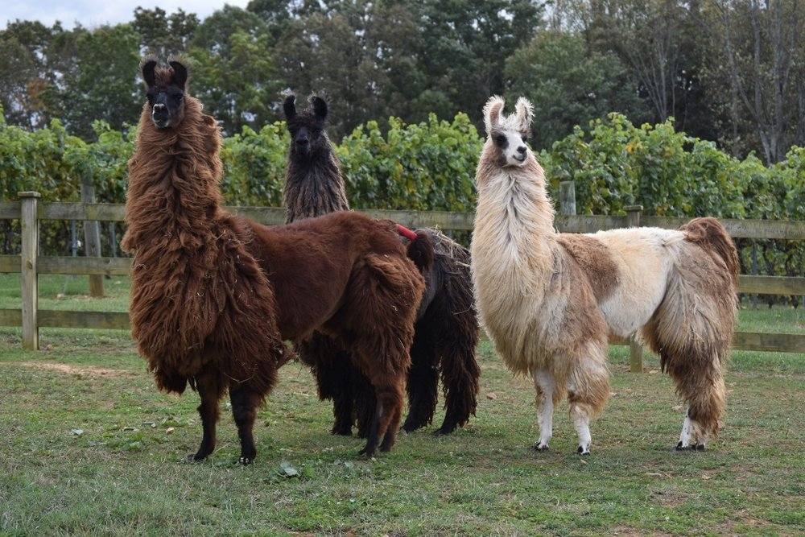
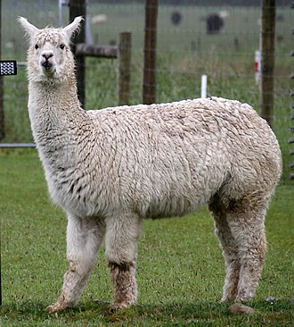
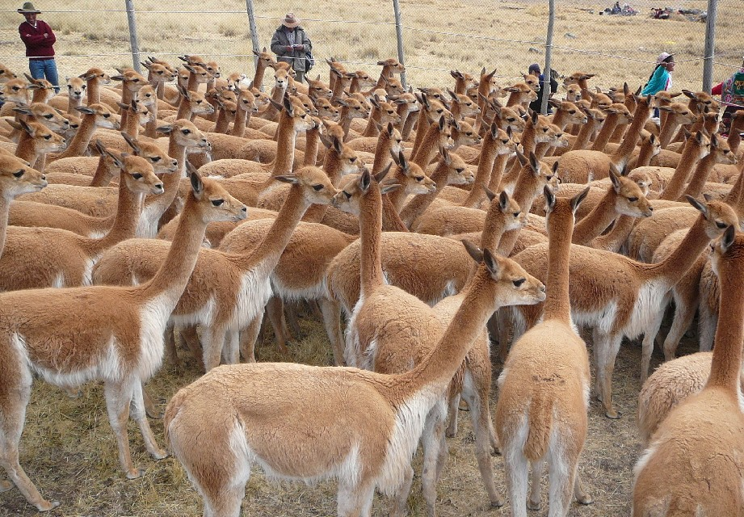

We Provide the best IT Services
Louis Lee
Louis Lee
 llama (/ˈlɑːmə/; Spanish pronunciation: [ˈʎama]) (Lama glama) is a domesticated South American camelid, widely used as a meat and pack animal by Andean cultures since the Pre-Columbian era. Llamas are social animals and live with others as a herd. Their wool is soft and contains only a small amount of lanolin.[2] Llamas can learn simple tasks after a few repetitions. When using a pack, they can carry about 25 to 30% of their body weight for 8 to 13 km (5–8 miles).[3] The name llama (in the past also spelled "lama" or "glama") was adopted by European settlers from native Peruvians.[4] The ancestors of llamas are thought to have originated from the Great Plains of North America about 40 million years ago, and subsequently migrated to South America about three million years ago during the Great American Interchange. By the end of the last ice age (10,000–12,000 years ago), camelids were extinct in North America.[3] As of 2007, there were over seven million llamas and alpacas in South America and over 158,000 llamas and 100,000 alpacas, descended from progenitors imported late in the 20th century, in the United States and Canada.[5] In Aymara mythology, llamas are important beings. The Heavenly Llama is said to drink water from the ocean and urinates as it rains.[6] According to Aymara eschatology, llamas will return to the water springs and lagoons where they come from at the end of time.[6]
alpaca (Lama pacos) is a species of South American camelid mammal. It is similar to, and often confused with, the llama. However, alpacas are often noticeably smaller than llamas. The two animals are closely related and can successfully crossbreed. Both species are believed to have been domesticated from their wild relatives, the vicuña and guanaco. There are two breeds of alpaca: the Suri alpaca and the Huacaya alpaca. Alpacas are kept in herds that graze on the level heights of the Andes of Southern Peru, Western Bolivia, Ecuador, and Northern Chile at an altitude of 3,500 to 5,000 metres (11,000 to 16,000 feet) above sea level.[1] Alpacas are considerably smaller than llamas, and unlike llamas, they were not bred to be working animals, but were bred specifically for their fiber. Alpaca fiber is used for making knitted and woven items, similar to sheep's wool. These items include blankets, sweaters, hats, gloves, scarves, a wide variety of textiles, and ponchos, in South America, as well as sweaters, socks, coats, and bedding in other parts of the world. The fiber comes in more than 52 natural colors as classified in Peru, 12 as classified in Australia, and 16 as classified in the United States. Alpacas communicate through body language. The most common is spitting to show dominance[2] when they are in distress, fearful, or feel agitated. Male alpacas are more aggressive than females, and tend to establish dominance within their herd group. In some cases, alpha males will immobilize the head and neck of a weaker or challenging male in order to show their strength and dominance. In the textile industry, "alpaca" primarily refers to the hair of Peruvian alpacas, but more broadly it refers to a style of fabric originally made from alpaca hair, such as mohair, Icelandic sheep wool, or even high-quality wool from other breeds of sheep. In trade, distinctions are made between alpacas and the several styles of mohair and luster.[3] An adult alpaca generally is between 81 and 99 centimetres (32 and 39 inches) in height at the shoulders (withers). They usually weigh between 48 and 90 kilograms (106 and 198 pounds).[4] Raised in the same conditions, the difference in weight can be small with males weighting around 22.3 kilograms (49 lb 3 oz) and females 21.3 kilograms (46 lb 15 oz).[5]
The vicuña (Lama vicugna) or vicuna[3] (both /vɪˈkuːnjə/, very rarely spelled vicugna, its former genus name)[4][5] is one of the two wild South American camelids, which live in the high alpine areas of the Andes, the other being the guanaco, which lives at lower elevations. Vicuñas are relatives of the llama, and are now believed to be the wild ancestor of domesticated alpacas, which are raised for their coats. Vicuñas produce small amounts of extremely fine wool, which is very expensive because the animal can only be shorn every three years and has to be caught from the wild. When knitted together, the product of the vicuña's wool is very soft and warm. The Inca valued vicuñas highly for their wool, and it was against the law for anyone but royalty to wear vicuña garments; today, the vicuña is the national animal of Peru and appears on the Peruvian coat of arms.[6] Both under the rule of the Inca and today, vicuñas have been protected by law, but they were heavily hunted in the intervening period. At the time they were declared endangered in 1974, only about 6,000 animals were left. Today, the vicuña population has recovered to about 350,000,[1] and although conservation organizations have reduced its level of threat classification, they still call for active conservation programs to protect populations from poaching, habitat loss, and other threats. Previously the vicuña was thought not to have been domesticated, and the llama and the alpaca were both regarded as descendants of the closely related guanaco. But DNA research published in 2001 has shown the alpaca may well have vicuña parentage.[7] Today, the vicuña is mainly wild, but the local people still perform special rituals with these creatures, including a fertility rite.[citation needed]